Estudo de dados e modelagem para prever atrasos no pagamento de crédito e identificar clientes com maior risco financeiro.
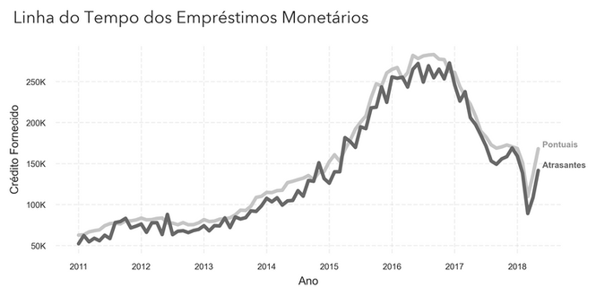
Visão conceitual do comportamento de pagamento analisado no projeto.
Visão geral
Da investigação do perfil à identificação do risco
O projeto parte de perguntas de negócio sobre o perfil dos clientes, percorre a exploração das variáveis financeiras e sociais, prepara uma base com mais de 120 colunas e treina um modelo LightGBM para separar clientes pontuais daqueles com maior chance de atraso.
A narrativa abaixo prioriza os resultados visuais. Códigos, dicionário de dados e detalhes de implementação permanecem disponíveis em controles expansíveis próximos de cada etapa.
Modelo
LightGBM · DART
AUC alcançada
0,764
Baseline informado
0,719
Amostra de avaliação
30.752 previsões
As métricas e estimativas apresentadas são as descritas no projeto original. Elas documentam o estudo e não representam garantia de desempenho ou retorno financeiro em produção.
Parte 01
Contexto e perguntas de negócio
Antes da modelagem, o problema foi traduzido em perguntas observáveis sobre comportamento, capacidade financeira e características dos clientes.
01 · Cenário
Identificar o risco antes da concessão do crédito
A Home Credit Group precisava melhorar a identificação de clientes que poderiam ter problemas para pagar o crédito solicitado. O objetivo foi combinar uma análise exploratória do perfil dos clientes com um modelo capaz de estimar a probabilidade de atraso a partir das informações disponíveis na solicitação.
O estudo também precisava transformar o resultado técnico em uma leitura de negócio, mostrando quais padrões apareciam na base e como a nova classificação poderia ajudar a reduzir a exposição a perdas.
02 · Perguntas
O que a análise precisava responder?
As perguntas abaixo organizaram a exploração e conectaram cada visualização às decisões que a instituição gostaria de apoiar.
Qual é o perfil dos clientes que solicitam crédito e daqueles que atrasam?
A idade pode sinalizar diferenças no risco de atraso?
O tipo de emprego e a escolaridade aparecem associados à pontualidade?
Estado civil e número de dependentes mudam o comportamento observado?
Renda, valor do crédito e preço dos bens ajudam a distinguir os grupos?
Clientes que solicitam mais do que precisam apresentam maior dificuldade?
Quais características podem contribuir para a previsão de atraso?
Qual seria o impacto financeiro estimado de identificar mais clientes em risco?
03 · Método
Um fluxo iterativo com CRISP-DM
O projeto foi conduzido com a metodologia CRISP-DM. O processo permite retornar a etapas anteriores quando a exploração dos dados ou o treinamento revela a necessidade de rever variáveis, tratamentos ou hipóteses.
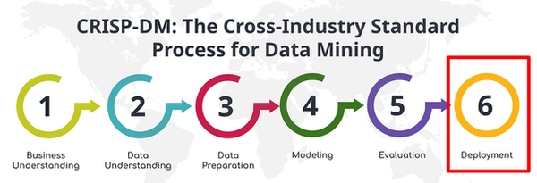
Etapas da metodologia CRISP-DM utilizadas para organizar o projeto.
04 · Estrutura
As principais variáveis da base
O conjunto reúne informações demográficas, financeiras, profissionais, familiares e temporais. Como a base possui mais de 120 colunas, o dicionário abaixo mantém apenas as variáveis centrais para a análise exploratória.
Consultar o dicionário de dados
Identificação e rótulo
SK_ID_CURR
ID único do cliente.
TARGET
Indicador de inadimplência, com valor 1 para o cliente inadimplente.
NAME_CONTRACT_TYPE
Tipo de contrato de crédito.
Perfil e família
CODE_GENDER
Gênero informado pelo cliente.
CNT_CHILDREN
Número de filhos.
CNT_FAM_MEMBERS
Número de membros na família.
NAME_FAMILY_STATUS
Estado civil.
NAME_HOUSING_TYPE
Tipo de moradia.
NAME_TYPE_SUITE
Companhia durante a solicitação de crédito.
Finanças e bens
AMT_INCOME_TOTAL
Renda anual total.
AMT_CREDIT
Valor total do crédito concedido.
AMT_ANNUITY
Valor anual de pagamento do crédito.
AMT_GOODS_PRICE
Preço dos bens financiados.
FLAG_OWN_CAR
Indica se o cliente possui carro.
FLAG_OWN_REALTY
Indica se o cliente possui imóvel.
OWN_CAR_AGE
Idade do carro, em anos.
Trabalho e educação
NAME_INCOME_TYPE
Tipo de fonte de renda.
NAME_EDUCATION_TYPE
Nível educacional.
OCCUPATION_TYPE
Tipo de ocupação.
DAYS_EMPLOYED
Tempo de emprego em dias, armazenado como valor negativo.
Tempo, região e contato
DAYS_BIRTH
Idade em dias, armazenada como valor negativo.
DAYS_REGISTRATION
Dias desde o registro do cliente.
DAYS_ID_PUBLISH
Dias desde a última atualização do documento.
REGION_POPULATION_RELATIVE
Densidade populacional relativa da região.
REGION_RATING_CLIENT
Avaliação da região de residência.
FLAG_EMP_PHONE
Indica a existência de telefone de trabalho.
FLAG_WORK_PHONE
Indica a existência de telefone fixo de trabalho.
FLAG_PHONE
Indica a existência de telefone fixo.
FLAG_EMAIL
Indica a existência de endereço de e-mail.
EXT_SOURCE_1
Pontuação de fonte externa relacionada ao risco de crédito.
Parte 02
Exploração dos dados e comportamento
A EDA compara clientes pontuais e clientes com atraso para investigar idade, valores financeiros, ocupação, escolaridade, produtos e estrutura familiar.
Análise 01
Idade e frequência de atraso
A distribuição etária apresenta comportamentos diferentes entre os grupos. Na base analisada, os atrasos se concentram com maior frequência entre clientes mais jovens, enquanto a quantidade de clientes atrasantes diminui conforme a idade aumenta.
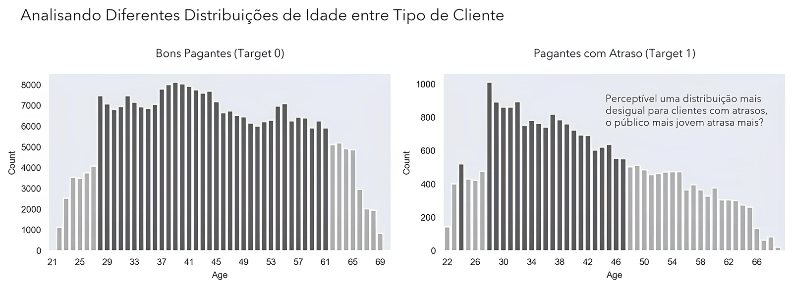
Distribuições de idade separadas pelo comportamento de pagamento.
Análise 02
Como os valores financeiros mudam com a idade?
Os clientes mais velhos solicitam valores maiores e financiam bens mais caros, sobretudo até aproximadamente os 50 anos. Ao mesmo tempo, o grupo com atraso aparece acima do grupo pontual em parte das comparações de crédito e preço dos bens.
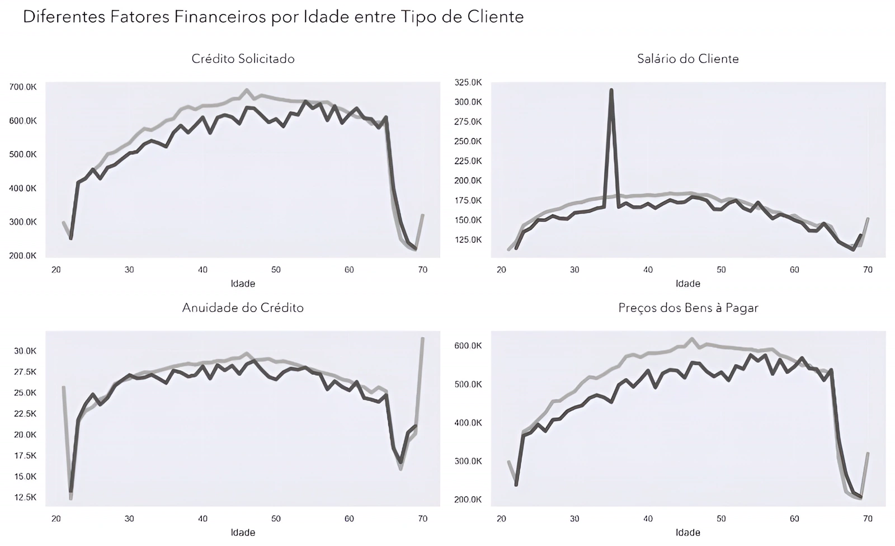
Fatores financeiros por idade para clientes pontuais e clientes com atraso.Ver análise complementar de outliers
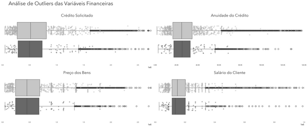
Os casos fora do intervalo interquartil ajudam a localizar valores financeiros extremos.
Análise 03
Crédito solicitado em relação ao preço dos bens
Na comparação descrita no estudo, clientes com atraso solicitaram, em média, 11.379 unidades monetárias a mais em crédito do que clientes pontuais. A diferença sugere que a relação entre o valor solicitado e o bem financiado pode contribuir para a identificação de risco.
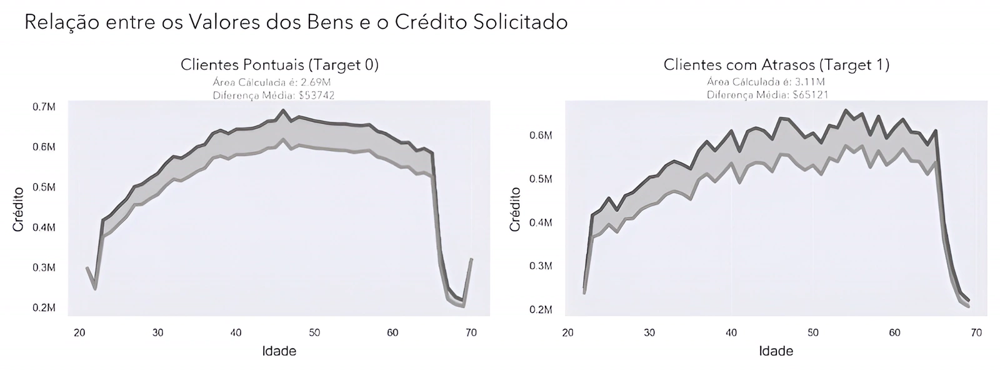
Comparação entre o valor do bem e o crédito concedido nos dois grupos.
Análise 04
Educação e ocupação no perfil dos clientes
A maioria da base não possui ensino superior. No recorte estudado, clientes com maior escolaridade e ocupações como Core Staff ou High Skill Tech Staff aparecem proporcionalmente com maior pontualidade. A leitura representa uma associação da base, não uma relação causal.
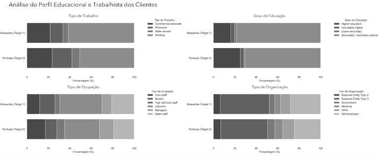
Perfil educacional e ocupacional dos clientes analisados.
Análise 05
Renda anual e valor do crédito
Os dois grupos solicitam valores de crédito relativamente semelhantes, mas há mais clientes de alta renda entre aqueles que pagam em dia. A renda pode ajudar na previsão quando combinada a outras variáveis, embora a separação visual isolada seja limitada.
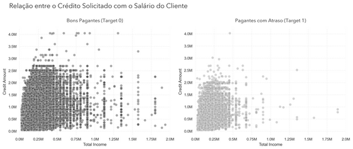
Relação entre renda anual e crédito solicitado nos dois grupos.
Análise 06
Produtos financiados e estrutura familiar
Eletrônicos concentram boa parte das solicitações, enquanto categorias de maior valor, como turismo e medicina, aparecem com menor frequência. Nos fatores familiares, as distribuições são parecidas entre os grupos; o estudo registra apenas um pequeno aumento na taxa de atraso entre clientes com mais filhos.
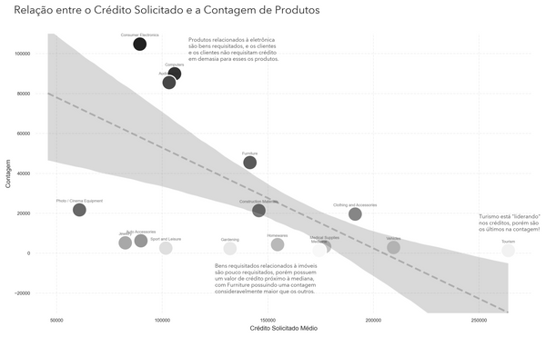
Crédito solicitado e volume de produtos por categoria.
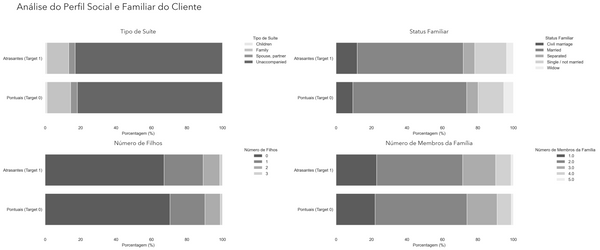
Comparação do perfil social e familiar dos clientes.
Parte 03
Preparação dos dados e modelagem
A preparação reduz redundâncias, trata ausências e categorias e organiza o conjunto para o treinamento do LightGBM.
01 · Base inicial
Um conjunto amplo antes da seleção das variáveis
A base original combina muitos tipos de atributos e possui mais de 120 colunas. Antes do treinamento, foi necessário remover informações consideradas irrelevantes, agregar variáveis redundantes e definir um fluxo consistente de tratamento.
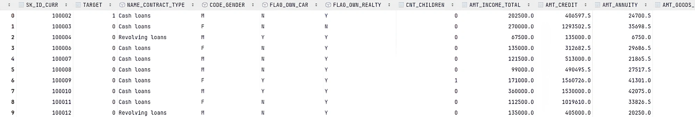
Recorte visual da estrutura inicial do dataset.Ver código de remoção e agregação de colunas
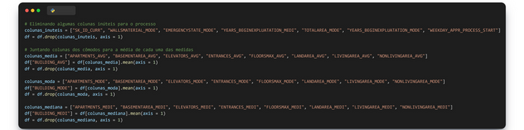
Redução da dimensionalidade e agregação de variáveis relacionadas.
02 · Valores ausentes
Medir antes de remover ou imputar
Funções específicas localizaram e ordenaram as colunas com valores ausentes. O projeto removeu as colunas com mais de 60% de ausência e imputou as demais: média para variáveis numéricas e moda para variáveis categóricas.
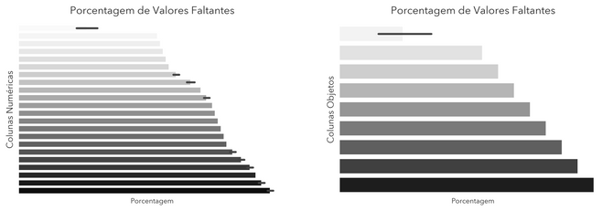
Porcentagem de valores ausentes por tipo de variável.Ver código de identificação e imputação
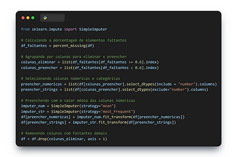
Identificação e imputação dos valores ausentes.
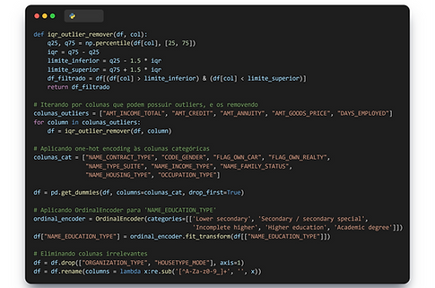
Tratamento de outliers e codificação das categorias.
03 · Pré-processamento
Balancear e padronizar antes do treinamento
Depois da seleção das variáveis, o projeto aplicou NearMiss para reduzir o desequilíbrio entre as classes e StandardScaler para padronizar os atributos usados pelo modelo.
Ver código de separação, NearMiss e StandardScaler
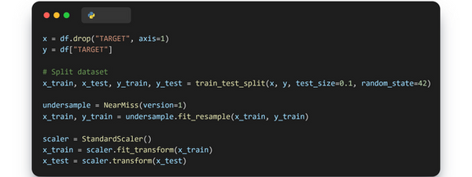
Pré-processamento e balanceamento da base para o treinamento.
04 · Modelo
LightGBM com DART e validação cruzada
O modelo utiliza LightGBM com o método DART, taxa de aprendizado, número de folhas, fração de features e peso adicional para a classe minoritária. A validação cruzada estratificada com cinco folds preserva a proporção das classes durante a avaliação.
O treinamento foi configurado para até 600 iterações e monitorou a AUC para identificar o ponto de melhor desempenho descrito no estudo.
Ver configuração e treinamento do LightGBM
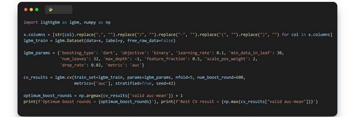
Hiperparâmetros, validação cruzada e seleção da melhor iteração.
Parte 04
Avaliação do modelo e impacto estimado
A etapa final compara a capacidade de separação das classes, mostra a diferença entre os modelos e traduz os atrasos adicionais identificados em uma estimativa financeira.
01 · Métrica principal
AUC-ROC para uma base desbalanceada
Precision e recall foram calculadas, mas o estudo priorizou a AUC-ROC para avaliar a separação entre clientes pontuais e clientes com atraso ao longo de diferentes limiares. Uma AUC de 0,5 corresponde ao comportamento de uma classificação aleatória.
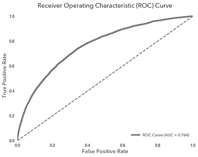
Curva ROC obtida pelo modelo treinado.Ver código de previsão, métricas e curva ROC
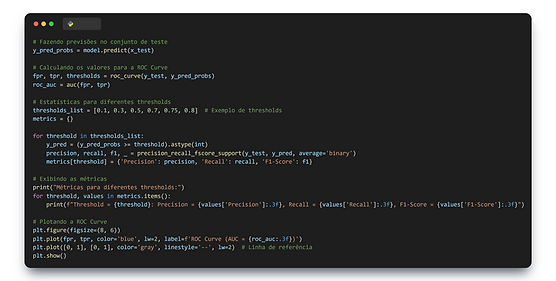
Cálculo das métricas por limiar e geração da curva ROC.
02 · Comparação
Mais clientes em risco identificados
O modelo anterior registrava AUC de 0,719 e identificou corretamente quatro clientes com atraso na amostra apresentada. O novo modelo registrou AUC de 0,764 e identificou 222 clientes com atraso, uma diferença de 218 casos detectados.
Modelo anterior0,719
AUC informada
Novo modelo0,764
AUC alcançada
Atrasos identificados4 → 222
na amostra apresentada
Diferença+218
clientes em risco detectados
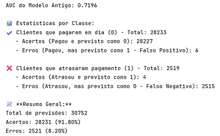
Resultado apresentado para o modelo anterior.
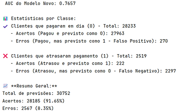
Resultado apresentado para o novo modelo.
03 · Impacto estimado
Transformar a diferença de classificação em uma leitura financeira
O cenário do projeto considera crédito médio de ¥557.778 por cliente inadimplente, atraso médio de quatro meses e perda potencial de até ¥100.400 por caso. Aplicada aos 218 clientes adicionais identificados, a diferença representa mais de ¥21,88 milhões em perdas potenciais sinalizadas na amostra de 30.752 previsões.
Crédito médio¥557.778
Atraso considerado4 meses
Perda potencial por casoaté ¥100.400
Perdas potenciais identificadasmais de ¥21,88 mi
Ver tabela original da estimativa
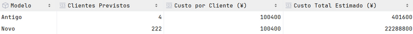
Comparação financeira usada no estudo original.
Limitação: esta é uma estimativa construída a partir das premissas do projeto. O valor não equivale a lucro garantido nem substitui uma análise financeira com taxas, recuperação de crédito, custo operacional e validação em produção.
Parte 05
Síntese dos resultados
A conclusão retoma os achados exploratórios, o desempenho do modelo e as limitações que precisam acompanhar a interpretação.
01
Idade e atraso
Clientes mais jovens aparecem com maior frequência no grupo com atraso, enquanto clientes mais velhos solicitam valores maiores, mas são menos numerosos entre os atrasantes.
02
Crédito e bens
O grupo com atraso solicita mais crédito em parte das comparações e apresenta mais casos financeiros extremos fora do intervalo interquartil.
03
Educação e ocupação
Maior escolaridade e algumas ocupações especializadas aparecem associadas a maior pontualidade no recorte analisado.
04
Perfil familiar
Estado civil, quantidade de membros e filhos apresentam distribuições semelhantes, com pouca separação visual entre os grupos.
05
Modelo final
O LightGBM com DART alcançou AUC de 0,764, acima da baseline de 0,719 informada no projeto.
06
Leitura de negócio
O novo modelo identificou 218 casos adicionais de atraso na amostra, usados para estimar mais de ¥21,88 milhões em perdas potenciais sinalizadas.
Conclusão
Um ciclo completo de análise e classificação de risco
O estudo conecta contexto de negócio, exploração, preparação, modelagem e comunicação do impacto. A principal contribuição não está apenas no aumento da AUC, mas na capacidade de localizar mais clientes da classe minoritária e tornar esse ganho compreensível para uma decisão de crédito.
Para uma aplicação real, o próximo passo seria validar o desempenho em dados temporais e não vistos, revisar o tratamento do desbalanceamento, calibrar os limiares pelo custo de cada erro e monitorar mudanças no perfil dos clientes. As associações exploratórias também devem ser interpretadas com cautela e não como relações causais.
A versão anterior do estudo permanece disponível no Wix ↗.